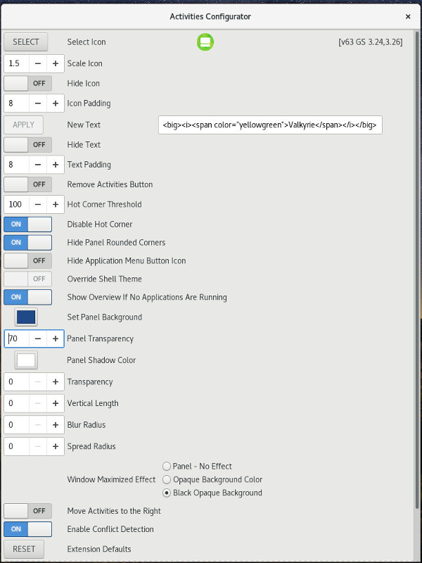

Activities Configurator
Significant changes were made to the Gnome Shell beginning with version 3.14. Version 37 of the Activities Configurator includes the following changes for version 3.14 and later:
Added option to hide the Application Menu Button.
Changed Drag and Drop behavior to support dragging through the Hot Corner to the Overview when the Hot Corner is disabled.
The layout of the Extension Preferences has been changed. See image below.
Version 40 adds an option to configure a Shadow for the Panel.
Features
The Activities Configurator Extension provides the following features:
-
The Gnome Shell Extension Preferences tool can be executed by a secondary mouse click on the Activities Text or Icon.
-
The Activities Text can be replaced by text chosen by the user. Pango formatting can be applied to the text.
Note: Pango formatting is similar but not the same as HTML or CSS.
b Make the text bold.
big Makes font relatively larger.
i Make the text italic.
s Strikethrough the text
.
sub Subscript the text.
sup Superscript the text.
small Makes font relatively smaller.
tt Use a monospace font.
u Underline the text.
Enter <i>Text in italics.</i> for:
Text in italics.
<span color="red" style="italic">Red italics.</span> for:
Red italics.
-
The Activities Text padding is adjustable.
-
The text can be hidden.
-
An icon can be selected to precede the text.
-
The icon padding is adjustable.
-
The icon can be hidden.
-
The Activities Button can be removed.
-
The Hot Corner Threshold can be adjusted.
-
The Hot Corner can be disabled.
-
The Panel Background can be changed from black to a color of your choice.
-
The Panel's rounded corners can be hidden.
-
The Panel's background color transparency is adjustable.
-
A configurable Shadow Effect can be added to the Panel.
-
Setting the Shadow's Transparency, Vertical Length, Blur Radius, and Spread Radius is very simple.
-
The appearance of the Panel's background can be chosen when a window is maximized.
- Conflicts with other extensions can be resolved programmatically in most cases.
